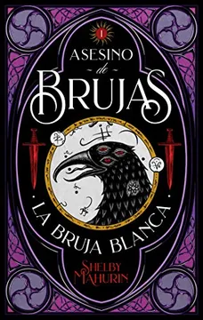
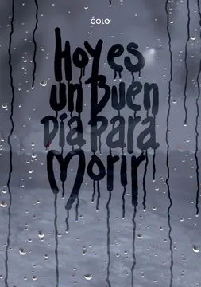

<!DOCTYPE html>
<html lang="en">
<head>
    <meta charset="UTF-8">
    <meta http-equiv="X-UA-Compatible" content="IE=edge">
    <meta name="viewport" content="width=device-width, initial-scale=1.0">
    <link rel="stylesheet" href="css/estilos_cate.css">
    <title>Novelas</title>
</head>
<body>
    
</body>
</html>
<body>
    <div class="header">
        <div class="logo">
          
        </div>
      </div>

    
    <div class="container">
        
    

    <h1>Novelas</h1>
    
        <div id="asesino">
            
        <h1>Asesino de Brujas - Shelby Mahurin</h1>
        <br>
        <h3>Editorial: Puck</h3>
        <br>
        <h3>Año: 2020</h3>
        <br>
        <h3>Reseña del libro</h3>
        <br>
        <p>Un debut brillante, lleno de todo lo que me gusta: una heroína vibrante y completamente realizada, un sistema de magia intrincado y letal y un romance ardiente que me mantuvo en vilo toda la noche. Asesino de brujas: la bruja blanca es sin duda una joya.» -Sarah J. Maas, autora de la saga Una corte de espinas y rosas, best seller del New York Times. Unidos como uno para amarse, para honrarse o para arder. Dos años atrás, Louise le Blanc huyó de su aquelarre y se refugió en la ciudad de Cesarine, donde renunció a la magia para vivir de lo que pudiera robar. Allí, cazan a brujas como Lou. Les temen. Y las queman. Como cazador de la Iglesia, Reid Diggory ha vivido su vida bajo una regla: «No permitirás que ninguna bruja viva». Pero cuando Lou realiza una gran artimaña, tanto ella como Reid se ven obligados a aceptar una situación impensada: el matrimonio. Lou, incapaz de ignorar sus sentimientos que son cada vez más fuertes, pero sin poder cambiar quién es, Lou debe elegir. Asesino de brujas: la bruja blanca se desarrolla en un mundo de mujeres empoderadas, magia oscura y donde los romances son fuera de serie. Cuando lo termines de leer, querrás más.</p>
            <a href="https://www.buscalibre.cl/libro-asesino-de-brujas-la-bruja-blanca/9789874132390/p/53177020">
                <button type="button" class="btn btn-outline-success" >Compra Aquí</button>
            </a>
            <a href="descargas.html">
                <button type="button" class="btn btn-outline-success" >Descarga Aquí</button>
            </a>
        
        
        </div>
        <br> <br>
        
        <div id="buen_dia">
            
        <h1>Hoy es un Buen dia Para Morir - Colo</h1>
        <br>
        <h3>Editorial: Dib Buks</h3>
        <br>
        <h3>Año: 2016</h3>
        <br>
        <h3>Reseña del libro</h3>
        <br>
        <p> El Mal de la tristeza ha llegado a las ciudades ¿Y si el mundo se acabara ahora? La nueva y extensa novela gráfica de Colo Un virus desconocido, que ataca el sistema nervioso y desata cuadros depresivos, lleva a la muerte numerosas víctimas. Más allá de las depresiones, el virus no muestra síntoma alguno hasta minutos antes de la muerte, cuando se ponen a sangrar los lagrimales. Seguiremos las vidas de los miembros de un grupo de música (con cierto parecido con el mismísimo grupo que el autor tiene en la vida real), un terrorista informático, un escritor, un asesino despiadado... </p>
            <a href="https://www.buscalibre.cl/libro-hoy-es-un-buen-dia-para-morir/9788415850892/p/47418692">
                <button type="button" class="btn btn-outline-success" >Compra Aquí</button>
            </a>
            <a href="descargas.html">
                <button type="button" class="btn btn-outline-success" >Descarga Aquí</button>
            </a>
        
        
        </div>
        
    </div>
    
</body>
</html>